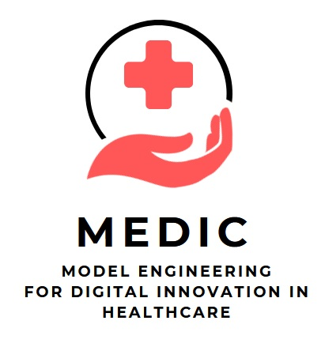
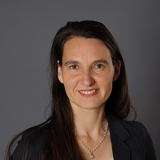
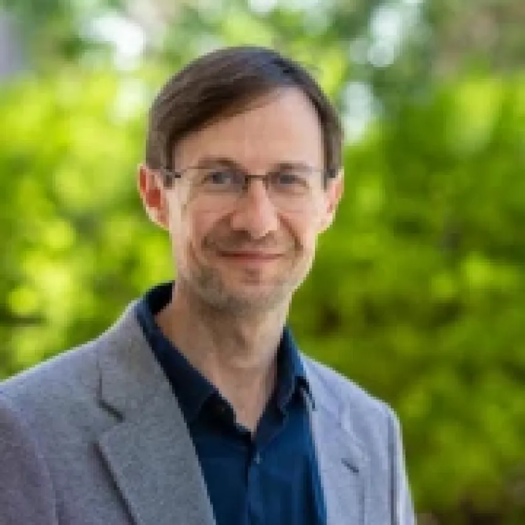
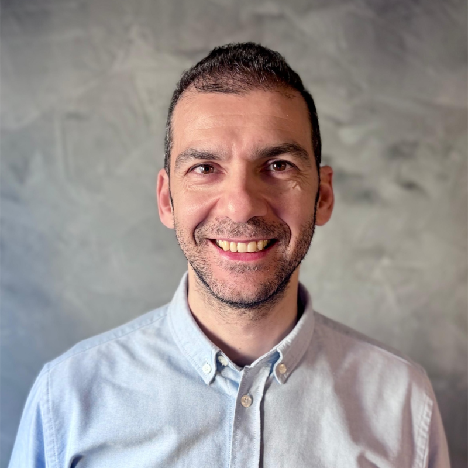

1st International Workshop on Model Engineering
for Digital Innovation in Healthcare (MEDIC)
4-6 October 2026, co-located at MODELS 2026, Malaga, Spain
Digital innovation in healthcare is supported by a range of digital solutions, including telemedicine, clinical decision support and prescription apps. The widespread adoption of such solutions raises quality concerns relating to safety, security, interoperability and maintainability. The aim of this workshop is to encourage discussion about the design, development, application and evaluation of models and model transformations that address quality concerns in medical software from the Model-Driven Engineering (MDE) perspective. Firstly, we aim to identify and explore the potential of modelling for digital transformation in healthcare. On the other hand, we want to discuss which modelling foundations are lacking to support digital transformation in healthcare. A key objective is to identify and develop common case studies, datasets, tools, standards and frameworks for researching model engineering for digital innovation in healthcare.
The intended audience is researchers from the MODELS community who are interested in applying modelling to healthcare, as well as software engineers and healthcare researchers who focus on software quality assurance. The aim is to encourage collaboration between these two groups. Modelling researchers may demonstrate the potential of modelling to support digital innovation in healthcare through the development of high-quality software systems. Meanwhile, stakeholders and researchers from the healthcare sector could highlight challenges in software quality assurance that could potentially be addressed using specialised modelling or model transformation techniques. They can also help evaluate such model-based solutions properly within the healthcare domain.
The 1st International Workshop on Model Engineering for Digital Innovation in Healthcare (MEDIC 2026) is proposed as a single day event to be held at the MODELS'26 conference in Malaga, Spain.
MEDIC 2026 invites submissions of two different types:
The MEDIC workshop welcomes submissions in all topics related to model engineering for digital innovation in healthcare including, but not limited to:
All authors must submit their contributions as a PDF file via EasyChair.
Paper authors need to submit their contributions as PDF files. These papers should follow the same formatting instructions used for the main track, available at https://www.acm.org/publications/proceedings-template for both LaTeX and Word users. LaTeX users must use the provided acmart.cls and ACM-Reference-Format.bst without modification, enable the conference format in the preamble of the document (i.e., \documentclass[sigconf,review]{acmart}), and use the ACM reference format for the bibliography (i.e., \bibliographystyle{ACM-Reference-Format}). The review option adds line numbers, thereby allowing referees to refer to specific lines in their comments.
All submissions will be reviewed (single-blind) by at least three members of the program committee.
Accepted papers will be included in the MODELS 2026 companion published by the ACM.
Note that by submitting a paper to the MEDIC workshop, authors acknowledge that they are aware of and agree to be bound by the ACM Policy and Procedures on Plagiarism. In particular, papers submitted to MEDIC 2026 must not have been published elsewhere and must not be under review or submitted for review elsewhere while under consideration for MEDIC 2026.
In addition, by submitting your article, you are hereby acknowledging that you and your co-authors are subject to all ACM Publications Policies, including ACM's new Publications Policy on Research Involving Human Participants and Subjects. Alleged violations of this policy or any ACM Publications Policy will be investigated by ACM and may result in a full retraction of your paper, in addition to other potential penalties, as per ACM Publications Policy.
Paper authors must ensure that all authors obtain an ORCID ID, so you can complete the publishing process for your accepted paper. ACM has been involved in ORCID from the start and the MODELS conference have recently made a commitment to collect ORCID IDs from all of their published authors.

Brandenburg University of Technology, Germany

Adelaide University, Australia

Certora, Israel
TBD